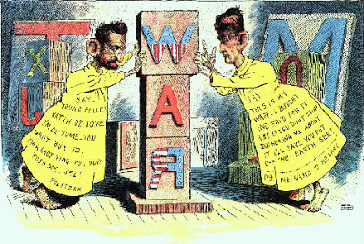
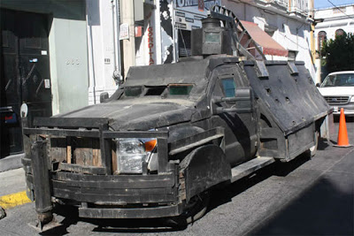
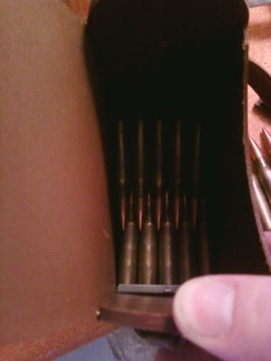
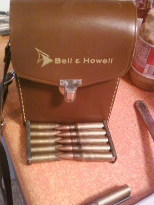

Tuesday, May 31, 2011
Ah, those were the days. . .
Never did have any of those growing up, but Rick Gilbert did have a Johnny Seven OMA as well as a spring loaded bazooka that fired plastic shells.
However, Santa Claus did bring me a full size Parris-Dunn training rifle like this one year:
At the end of Dennis Avenue and across a bean field was a stash of World War II searchlights that we fought mock battles around, atop and through.
Ah, those were the days.
For Sale: M-1 Carbine, magazines and ammunition
Have for sale as one lot the following items:
** National Postal Meter s/n 42761XX with Underwood barrel marked 3-44, Blue Sky, Arlington VA re-import in excellent condition. Pot-belly stock, typical arsenal rebuild mix-master of parts, with removable recoil check, Korean War pattern sling and oiler, ready to go up Pork Chop Hill again.
** Magazines, 30-round, USGI, split-back
Manufacturer Code SEY, Qty 6 (5 new, 1 used)
Manufacturer Code AI, Qty 4 (2 new, 2 used).
Total: Ten magazines, 30-round.
** Magazines, 15-round, USGI.
Manufacturer Code MN, Qty 3 (1 new, 2 used).
Manufacturer Code IS, Qty 6 (5 new, 1 used).
Manufacturer Code IU, Qty 3 (new).
Manufacturer Code U, Qty 1 (new).
Manufacturer Code UQ, Qty 2 (used).
Manufacturer Code IA, Qty 3 (used).
Manufacturer Code BW, Qty 2 (new).
Manufacturer Code RO, Qty 1 (used).
Manufacturer Code RC, Qty 1 (new).
Total: 22 magazines, 15 round.
** Ammunition, all (including civilian) packed in stripper clips and bandoleers.
USGI, predominantly Lake City Korean War production but also RA, WRA & WCC headstamps. Qty: 1,580 Rounds
S&B 400 Rounds
Total: 1,980 Rounds
Recap: Carbine, 32 magazines & almost two thousand rounds of combat-packed ammo.
Asking: $2,000.00.
** National Postal Meter s/n 42761XX with Underwood barrel marked 3-44, Blue Sky, Arlington VA re-import in excellent condition. Pot-belly stock, typical arsenal rebuild mix-master of parts, with removable recoil check, Korean War pattern sling and oiler, ready to go up Pork Chop Hill again.
** Magazines, 30-round, USGI, split-back
Manufacturer Code SEY, Qty 6 (5 new, 1 used)
Manufacturer Code AI, Qty 4 (2 new, 2 used).
Total: Ten magazines, 30-round.
** Magazines, 15-round, USGI.
Manufacturer Code MN, Qty 3 (1 new, 2 used).
Manufacturer Code IS, Qty 6 (5 new, 1 used).
Manufacturer Code IU, Qty 3 (new).
Manufacturer Code U, Qty 1 (new).
Manufacturer Code UQ, Qty 2 (used).
Manufacturer Code IA, Qty 3 (used).
Manufacturer Code BW, Qty 2 (new).
Manufacturer Code RO, Qty 1 (used).
Manufacturer Code RC, Qty 1 (new).
Total: 22 magazines, 15 round.
** Ammunition, all (including civilian) packed in stripper clips and bandoleers.
USGI, predominantly Lake City Korean War production but also RA, WRA & WCC headstamps. Qty: 1,580 Rounds
S&B 400 Rounds
Total: 1,980 Rounds
Recap: Carbine, 32 magazines & almost two thousand rounds of combat-packed ammo.
Asking: $2,000.00.
Dupnik's Death Squad. Excellent tactical analysis of the Guerena murder.
Many thanks to the Irregulars who forwarded this link. The locals were untrained, ill-led, ill-disciplined cowboys.
An example of Mexican dark humor? "President Obama is Urged to Stop Flow of Arms Across the Border."

El Presidente: the Gunwalker in Chief.
The Justice in Mexico Project reports that "President Obama is Urged to Stop Flow of Arms Across the Border." A protest of Operation Gunrunner? No, of course not. What they want is more restrictions on American firearm owners. They want the Gunwalker in Chief to crack down on US.
Civil organizations in Mexico and the US are working together to urge President Obama to stop the flow of arms from the US across the border into Mexico. This campaign has become known as “Alto al Contrabando de Armas” (A Stop to the Smuggling of Arms) and it hopes to significantly reduce drug violence in Mexico as well as increase security in the border region. Some of the main organizations leading this movement are Alianza Cívica (Civic Alliance), Centro Nacional de Comunicación Social (Cencos), Evolución Mexicana (Mexican Evolution), and Propuesta Cívica (Civic Proposal). According to Milenio, from 2004 to 2008, 84% of weapons found in crime scenes were imported from the US.
There are three main policies that the campaign “Alto al Contrabando de Armas” has proposed. The first policy calls for the “immediate detention and prohibition of imported arms into the US.” The second policy calls on the Bureau of Alcohol, Tobacco, Firearms and Explosives (ATF) to closely monitor people who are buying multiple arms at once. Salesmen are urged to report to the ATF when such an instance occurs. The last policy involves giving the ATF an increased role in border state regions so that they can better regulate the arms that are brought into Mexico. Sergio Aguayo, socio fundador de Alianza Cívica, has stated that although these policies will not end violence, these efforts will surely have a significant positive impact on reducing the amount of violence that Mexico experiences and it will make it harder for organized crime groups to equip themselves.
This is not apparently an example of Mexican dark humor. I left this comment, which is "in moderation":
You might want to insist that the elected federal representatives of both countries investigate the sordid and murderous scandal known as "Project Gunrunner" before giving more power to the same agency (ATF) which, by the testimony of its own agents, facilitated the smuggling of thousands of weapons south of the border. This official government policy of depraved indifference to murder has cost the lives of (at a minimum) hundreds of Mexican citizens and at least two U.S. federal law enforcement agents.
Or was the circumscription of the rights of honest American gunowners the ONLY thing you had in mind?
If it is, then have the honesty to say so and don't try to cloak it in phrases of well intentioned horse excrement.
Monday, May 30, 2011
I think I can answer Rob't Farago's question. Dan Freedman, The Cowardly Liar. 21st Century Yellow Journalism at the Hearst newspaper chain.
"Yellow journalism, in short, is biased opinion masquerading as objective fact." -- Oracle.

The New York World, run by Joseph Pulitzer and The New York Journal, run by William Randolph Hearst, vie for credit in starting the Spanish American War.
Robert Farago, writing at The Truth About Guns, asks, with justifiable outrage:
How could the Houston Chronicle write about Mexican gun running without once mentioning the ATF’s Gunwalker Scandal? Actually, I’ve got a better question: why would the Houston Chronicle write about the guns smuggled to Mexican drug cartels without making a single reference to the fact that the Bureau of Alcohol, Tobacco, Firearms and Explosives (ATF) let thousands of guns walk across our southern border to the bad guys?
Farago ascribes reporter Dan Freedman's Gunwalker allergy to "that worst of all possible journalistic combinations: willful ignorance . . ."
"Willful ignorance"? Certainly true, at least in part. Farago concludes:
The ATF must love reports like this. Stories that repeat the same old lies and distortions about the source of the Mexican drug cartels’ firearms and make it seem like America’s lax gun laws are to blame for the narco-terrorists’ endless killing spree.
Also most certainly true. And that is WHY Dan Freedman wrote the story he did, to please his ATF/DOJ/Obama Administration sources.
The cowardly liar. Dan Freedman: Hearst's Numbah One Ichiban Boy in the District of Criminals.
You see, Dan Freedman is not some local Houston Chronicle reporter, he is news editor of the Hearst Newspapers Washington bureau -- providing material to the entire Hearst newspaper chain -- and all you Texans can breathe easy because according to New York on the Potomac, he "has deep New York roots."
A native of New York City, he has covered six Supreme Court confirmations and wrote about major court opinions, as well as issues ranging from abortion to immigration to the wars on drugs and terror. He also covered the George W. Bush campaign in 2000 and headed a Hearst team in 2002 that produced a ground-breaking series on the USDA National School Lunch Program, which won awards from the National Press Club and the Association of Food Journalists.
Dan Freedman's continued utility to Hearst newspapers -- reflected in his paycheck -- involves stories dependent upon sources within the federal government. As Hearst's Numbah One Ichiban Boy in the District of Criminals, Freedman can hardly be ignorant of the Gunwalker scandal. If he chooses not to write of it, it is because he is KNOWINGLY engaged in "biased opinion masquerading as objective fact."
This is, I suppose, "willful ignorance," to use Farago's term, but only in the 1984 Orwellian sense where Freedman obligingly "forgets" that which is no longer approved by the Party.
Freedman, faithful to the Hearst tradition (and to whom I am forwarding a copy of this post to his email address, dan@hearstdc.com ) is engaging in 21st Century yellow journalism. Yellow journalism as in "biased opinion masquerading as objective fact" but also yellow as in cowardly.
Freedman has not covered, and will not mention, the Gunwalker scandal, because he is a cowardly, paid liar who knows where his paycheck comes from. If the Party decrees that the murderous Gunwalker scandal shall not be mentioned, then the propagandist slash auto-scribe (I will not use the term "reporter") Dan Freedman will certainly see that he does his part to send it down the memory hole.
Thus is his "story" explained.
Mike Vanderboegh
"Weinergate" -- Forget Gunwalker, THIS is the kind of scandal the media LIVES for.

Schumer protege Anthony Weiner with his wife, Hillary protegee Huma Abedin.
Was it, or was it not, Weiner's wiener?
Congressman Weiner, a long-time protege of Charlie Schumer, is alleged to have sent a Washington state co-ed (self-described as a "progressive" and "humanitarian in the making") a picture of his underwear-clad but obviously tumescent wiener on Twitter.
Weiner claims it was a hack, the girl says she's never been to DC or New York to meet Weiner, but the media, unlike the Gunwalker scandal, is all over this. From the lefty Village Voice to the Washington Post and Associated Press to the London Daily Mail, the media is all atwitter about Weiner's wiener tweet. (Say that five times fast.)
I suppose that the Gunwalker scandal would be more popular with the press if it involved the ATF-sanctioned cross-border smuggling of powerful semi-automatic lithium battery-operated dildos to the notorious Mexican Spanish Fly cartels.
Sunday, May 29, 2011
"Pistol Packing Mamas Round Up Marauders." The Battle of Viers Mill Village, Maryland, 6 July 1950. A Second Amendment history research opportunity.
A tip of the boonie hat to Irregular Patrick H. for forwarding this image:
The original caption: "Pistol Packing Mamas Round Up Marauders. Viers Mill Village, MD. : Pistol-packing mamas of Viers Mill Village, Washington D.C., suburb, terrorized by night marauders for 3 weeks, rounded up four men in gun-fire studded chase early today. Wielding rifles, pistols, knives and baseball bats, the aroused housewives had the intruders begging for mercy when police reached the battlefield. Shown (L-R): Mrs. Mary Schultz, holding a .45; Mrs. Doris Young, carrying a butcher knife; Mrs. Martha Newell with rifle, and Mrs. Warren Leigh, wielding a baseball bat. . . July 06, 1950."
First an explanation of spelling from Highbeam.com:
The Washington Post has this snippet of a history of Veirs Mill Village:
Local resident John Hayden recalls something of the feel of the area at the time:
And that, my disappointed readers, is all I know. An amazing photo, an intriguing caption and the beginnings of the backdrop of what must be a great story of the armed citizenry. If anyone out there has some more details of this skirmish, I would be grateful if you would forward them to me.
The original caption: "Pistol Packing Mamas Round Up Marauders. Viers Mill Village, MD. : Pistol-packing mamas of Viers Mill Village, Washington D.C., suburb, terrorized by night marauders for 3 weeks, rounded up four men in gun-fire studded chase early today. Wielding rifles, pistols, knives and baseball bats, the aroused housewives had the intruders begging for mercy when police reached the battlefield. Shown (L-R): Mrs. Mary Schultz, holding a .45; Mrs. Doris Young, carrying a butcher knife; Mrs. Martha Newell with rifle, and Mrs. Warren Leigh, wielding a baseball bat. . . July 06, 1950."
First an explanation of spelling from Highbeam.com:
With a name like Viers Mill Village, you might think it all started with a mill.
And you would be right, though the names of the original grain mill and the Silver Spring community are spelled differently -- a source of confusion and consternation to residents through the years. The disputed spelling is also the root of various spellings of businesses and facilities in the area.
The housing development, built just after World War II, uses Viers Mill, with an "ie." The family that owned the mill used, and still uses, Veirs, with an "ei." The county made an official ruling in 1967 that the road is Veirs Mill. But the local elementary school inside the development uses Viers Mill.
The Washington Post has this snippet of a history of Veirs Mill Village:
Veirs Mill Village was named for Samuel C. Veirs's 1838 grist mill, according to Roger Brooke Farquhar's 1952 book, "Historic Montgomery County, Maryland: Old Homes and History." The mill was "a large establishment which operated successfully for 75 or 80 years and provided a great market for farmers in surrounding areas."
The village that sprang up near the mill site was among the first post-World War II communities built with returning veterans in mind. In 1947 Harris Co. of New York developed the rolling 330-acre tract, completing as many as 10 houses each day. More than 1,400 identical, 27-by-24-foot white frame houses were sold for about $8,000 each.
From the ground-breaking, the subdivision created a ruckus.
In a 1947 article in a Montgomery County newspaper, the Sentinel, the Wheaton Chamber of Commerce labeled the houses "hovels." According to Jane Sween, librarian for the Montgomery County Historical Society, influential politician Brooke Johns called the homes "shacks and potential slums." Another writer called them "little crackerboxes, all in a row, unfit for human habitation."
But young World War II veterans and their families snapped up the boxy bungalows. Financing was at 4 percent and almost all the original owners bought the houses with government-backed mortgages.
Local resident John Hayden recalls something of the feel of the area at the time:
My great-grandparents came from Bel Alton, in Charles County in Southern Maryland, and that’s about the only part of Maryland where I haven’t lived. I am a Baby Boomer, a child of the ’50s and ’60s, a child of the suburbs. My family moved to a brand new ticky-tacky house in Wheaton Woods in 1952, put down deep roots, and multiplied. We were far out in the wilds of Montgomery County, in the 1950s. Veirs Mill Road was a two-lane country road, and so was Georgia Avenue. Veirs Mill Village was the first subdivision in those parts, built for World War II veterans and their brides and children, and Wheaton Woods was the second subdivision. The Veirs Mill Shopping Center was at the corner of Veirs Mill and Randolph Roads. (The shopping center is there today, but the stores have all changed.) It had an Acme grocery store, a Rexall Drugstore, a hardware store, Suburban Trust Bank, barber shop, a movie theater, and Esso gas station. My father would buy $3 worth of gas, pumped by an attendant with a change machine on his belt. Another attendant washed the windshield and checked the oil. Rockville and Gaithersburg were little farm towns. For shopping, my mother went to the big Hecht Co. Department Store in downtown Silver Spring. Hecht’s is long departed, but the distinctive building remains, big as ever.
And that, my disappointed readers, is all I know. An amazing photo, an intriguing caption and the beginnings of the backdrop of what must be a great story of the armed citizenry. If anyone out there has some more details of this skirmish, I would be grateful if you would forward them to me.
Saturday, May 28, 2011
Or not.
Sorry, guys, I'm done in. Heart is hurting, which is God's major clue that I did too much today. More tomorrow.
The Postman. Now there's a bright idea. Mr. Friendly Letter Carrier: Counter-terrorism Recon Soldier.
The Postal Service, everyone -- even the unions -- agrees, is going broke fast. Bankruptcy looms, while the unions continue to get expensive sweetheart contracts from an entity that must find a new business model or die.
And what bright idea might save Ben Franklin's metastasized mutation?
Wasn't that already a bad Kevin Costner movie?
And what bright idea might save Ben Franklin's metastasized mutation?
Fredric V. Rolando, president of the 275,000-member National Association of Letter Carriers, doesn't sound like he's interested in making major concessions. He argues the agency should be increasing rather than cutting its services. One of his ideas is to outfit postal trucks with sensors so mail carriers can thwart possible biological terrorist attacks. "They can work with Homeland Security to detect things that are in the air," Rolando says. The Homeland Security Dept. declined to comment.
Wasn't that already a bad Kevin Costner movie?
Friday, May 27, 2011
Now THIS is funny. At "Larry Sabato's Crystal Ball": "Where Are the Obama Scandals?" Uh, the Scandal Express is running right on time.
"Hmmm. The Indians used to be able tell if the buffalo were moving by listening to the ground. I wonder if the Scandal Express is on time? Maybe if I listen just a bit longer. . ."
Brendan Nyhan, guest columnist at Larry Sabato's crystal Ball, writes:
One of the least remarked upon aspects of the Obama presidency has been the lack of scandals. Since Watergate, presidential and executive branch scandal has been an inescapable feature of the American presidency, but the current administration has not yet suffered a major scandal, which I define as a widespread elite perception of wrongdoing. What happened, and what are the odds that the administration’s streak will continue?
Obama has been extremely fortunate: My research (PDF) on presidential scandals shows that few presidents avoid scandal for as long as he has. In the 1977-2008 period, the longest that a president has gone without having a scandal featured in a front-page Washington Post article is 34 months – the period between when President Bush took office in January 2001 and the Valerie Plame scandal in October 2003. Obama has already made it almost as long despite the lack of a comparable event to the September 11 terrorist attacks. Why?
Obama should be highly vulnerable to scandal given his standing with Republicans. My research identifies presidential approval among opposition party identifiers as a key risk factor. The reason is that discontent among the opposition’s base creates demand for negative news about the president, encouraging opposition legislators and members of the news media to promote allegations of misconduct. . .
Gee, I dunno, maybe because the collectivists OWN the so-called "mainstream media" and they are PROTECTING their leg-tingley investment?
However, Nyhan looks at the data from previous presidential scandals (check the charts) and concludes:
However, the results suggest that the likelihood of a presidential or executive branch scandal before the 2012 election are quite high (though continued unrest in the Middle East or other news events could dampen the odds).
Indeed. And Nyhan even has heard of one that might just have some legs:
Given Obama’s reputation for personal integrity, the controversy will likely concern actions taken within the executive branch. . . . Recent examples include . . . allegations that Department of Justice officials allowed straw purchases of guns that were smuggled to Mexico, prompting a standoff with Congress that House Committee on Oversight and Government Reform Chairman Rep. Darrell Issa (R-CA) recently compared to Iran-Contra.
No kidding? Nyhan concludes:
Whether these specific allegations will succeed is anybody’s guess — some unexpected new controversy may instead provide the spark — but the first Obama scandal is likely to arrive sooner than most people think.
You bet yer ass it will, Brendan. You bet yer ass it will.
Why, you're gonna look like a regular Nostradamus social science prophet before this is over.
Your colleagues won't love you for it, though.
Trust me.
Brendan Nyhan, Swami Gunwalker: "Yes, my great crystal ball is clearing, Mr. President. . . I see . . . a scandal. Yes, a great mucking scandal. Something about walking guns. And, what's this? Richard Nixon? Yes, Richard Nixon, and he's beckoning to you, Mr. President. Yes, he's beckoning to you and he's . . . he's smiling. Yes, smiling. I hope you enjoyed your future, Mr. President. That will be one Benjamin Franklin. Now, will you send in the Secretary of State as you leave the tent?"
Do this. Spread it far and wide. Beat the firearm confiscationists with their own tactics.
From PT today:
Mike --
Mike --
I'm sure you're aware of the ATF's long gun registry plans for the southwest border states. The OMB is seeking comments on the registry and so far we have gotten hosed on the anti:pro ratio by MAIG and their automated mailer by a 3:1 ratio.
Robert Farago at The Truth about Guns did a piece on this issue and how we're losing: http://thetruthaboutguns.com/2011/05/robert-farago/maig-wins-pro-reg-atf-cyber-war/
John Richardson of the blog No Lawyers Only Guns and Money and I were upset that we got one upped. So we worked together to fight fire with fire. I managed to figure out how to set up an automated email system of our own. It took some work but now we have it up and running on his blog. You simply fill out your name, email, city and state (optional), and there is a pre-filled note stating opposition to the plan. You hit submit, and the website emailmeform.com sends the email to oira_submission@omb.eop.gov on your behalf with your name, email, and city and state if you provided it, along with the pre-filled note and any changes or additional comments you want.
The website I used to create the form mailer is http://www.emailmeform.com/ They have all sorts of different forms for websites, if you want to check it out. It is free for up to 5 forms. You create the form and tell the form what to do with the submission, and then it spits out a html code you can copy and paste to any website.
We're trying to spread the word as quick and as wide as we can. If you wouldn't mind posting a link to http://onlygunsandmoney.blogspot.com/2011/05/easy-way-to-comment-on-atfs-power-grab.html . . . this is a simple way for our side to drum up support against this plan. Let me know if you have any questions about how the program works. . .
I've sent this email out to a couple of pro gun bloggers already. Hopefully we can get some action if we spread the word. The comment period closes May 31st.
I apologize if John has emailed you already. He is spreading the word as well. I am sending this email to as many pro gun bloggers I can get to.
Thanks and keep up your great blogging. The scandal along the border would have been buried and dead if it wasn't for you and David.
Breaking Story: A Memorial Day present for the Gunwalker scandal conspirators. The first hearing may come as soon as the week of 13 June!

Darrell Issa is reported to have had enough stalling by Holder & Co.
Heard about this tip yesterday and spent this morning verifying: the first Gunwalker scandal hearing is penciled in for the week of 13 June, according to sources in Washington DC and California. There are currently no hearings listed on the schedule for the House Committee on Oversight and Government Reform, but sources say Issa has had enough and is serious about getting to bottom of the Gunwalker scandal despite the stonewalling and delay on documents.
Said one source, "They're fine-tuning the the witness list right now and subpoenas should be flowing after the Memorial Day holiday recess with the hearing to come very quickly."
And that, boys and girls, ends on Monday, 13 June.
Run! Run! As fast as you can, Gunwalker Man! You won't be able outrun the hearings.
Requiem for the Huey: The Army retires its last UH-1 in a ceremony at Fort Rucker, Alabama.
They heard the hum of our motors, they counted the rotors
And waited for us to arrive . . .
And we would all go down together
-- Goodnight Saigon by Billy Joel.
A deep genuflection and tip of the boonie hat to Irregular FG for forwarding this link and the speech accompanying it (also found here.)
CW4 Larry Castagneto who flew the Huey in Vietnam, speaks at the UH-1 retirement ceremony at Cairns Army Air Field, 17 May 2011. His speech below:
As a Vietnam Veteran Army Aviator, I would like to thank everyone for coming to this special occasion, on this to be honest...very sad day, the end of an era. An era that has spanned over 50 years. The retirement of this grand old lady "OUR MOTHER" ... the Huey.
I would like to thank, MG Crutchfield for allowing me to speak at this event and try to convey in my own inadequate, meager way.. what this aircraft means to me and so many other Vietnam veterans.
First a few facts:
It was 48 yrs ago this month that the first Huey arrived in Vietnam with units that were to become part of the 145th and the 13th Combat Aviation Battalions; both units assigned here at Ft Rucker today. While in Vietnam, the Huey flew approximately 7,457,000 combat assault sorties; 3,952,000 attack or gunship sorties and 3,548,000 cargo supply sorties. That comes to over 15 million sorties flown over the paddies and jungles of Nam, not to include the millions of sorties flown all over the world and other combat zones since then ....what a amazing journey.... I am honored and humbled to have been a small part of that journey.
To those in the crowd that have had the honor to fly, crew, or ride this magnificent machine in combat, we are the chosen few, the lucky ones . They understand what this aircraft means, and how hard it is for me to describe my feelings about her as a Vietnam combat pilot.... for she is alive... has a life of her own, and has been a life long friend.
How do I break down in a few minutes a 42 year love affair, she is as much a part of me, and to so many others,,,as the blood that flows through our veins. Try to imagine all those touched over the years ...by the shadow of her blades.
Other aircraft can fly overhead and some will look up and some may not; or even recognize what they see but, when a Huey flies over everyone looks up and everyone knows who she is... young or old all over the world she connects with all.
Jumping from a Huey.
To those that rode her into combat... the sound of those blades causes our heart beat to rise... and breaths to quicken... in anticipation of seeing that beautiful machine fly overhead and the feeling of comfort she brings.
No other aircraft in the history of aviation evokes the emotional response the Huey does... combat veteran's or not... she is recognized all around the world by young and old, she is the ICON of the Vietnam war, U.S. Army Aviation, and the U.S. Army. Over 5 decades of service she carried Army Aviation on her back, from bird dogs and piston powered helicopters with a secondary support mission, to the force multiplier combat arm that Army Aviation is today.
Even the young aviators of today, that are mainly Apache pilot's, Blackhawk pilot's, etc., that have had a chance to fly her will tell you there is no greater feeling, honor, or thrill then to be blessed with the opportunity to ride her thru the sky... they may love their Apaches and Blackhawks, but they will say there is no aircraft like flying the Huey " it is special".
There are two kinds of helicopter pilots: those that have flown the Huey and those that wish they could have.
The intense feelings generated for this aircraft are not just from the flight crews but, also from those who rode in back ...into and out of the "devils caldron". As paraphrased here from "Gods own lunatics", Joe Galloway's tribute to the Huey and her flight crews and other Infantry veterans comments:
Is there anyone here today who does not thrill to the sound of those Huey blades?? That familiar whop-whop-whop is the soundtrack of our war...the lullaby of our younger days it is burned in to our brains and our hearts. To those who spent their time in Nam as a grunt, know that noise was always a great comfort... Even today when I hear it, I stop...catch my breath...and search the sky for a glimpse of the mighty eagle.
To the pilots and crews of that wonderful machine ...we loved you, we loved that machine.
No matter how bad things were...if we called ... you came... down through the hail of green tracers and other visible signs of a real bad day off to a bad start. I can still hear the sound of those blades churning the fiery sky ....To us you seemed beyond brave and fearless... Down you would come to us in the middle of battle in those flimsy thin skin -chariots ...into the storm of fire and hell,..
...we feared for you , we were awed by you. We thought of you and that beautiful bird as " God's own lunatics"... and wondered ...who are these men and this machine and where do they come from ...... Have to be "Gods Angels".
Medevac.
So with that I say to her, that beautiful lady sitting out there, from me and all my lucky brothers, that were given the honor to serve their country, and the privilege of flying this great lady in skies of Vietnam - Thank you for the memories...Thank you for always being there...Thank you for always bringing us home regardless of how beat up and shot up you were..., Thank You!!!!.
You will never be forgotten, we loved you then..... we love you now... and will love you till our last breath ...
Downed Huey.
And as the sun sets today, if you listen quietly and closely you will hear that faint wop wop wop of our mother speaking to all her children past and present who rode her into history in a blaze of glory ...she will be saying to them: I am here... I will always be here with you.
I am at peace and so should you be ... and so should you be.
Huey at sunset in Vietnam.
More on Improvised Armored Cars of the Mexican Cartels.

"'Narco tank' is latest find in cartels' armored vehicles."
The "narco tank," reportedly a 2011 Ford F-Series Super Duty truck, was radically altered, with plates of armor and a gun turret. From the website PickupTrucks.com:
As you can see, it's a one-of-a-kind armored up-fit. The front bumper has a folding battering ram -- which we call the "man-ram" -- and sloping metal plates have been welded to almost every surface. The cargo box is fully enclosed with gun ports and a protected turret that can rotate to spot rival drug cartels or Mexican government troops.
Video:
Troubles and blessings.
Troubles:
Back from Ohio yesterday afternoon late only to have:
A. Blogger unable to access using Firefox. (Still out, finally forced this AM to use Google Chrome. Is that the whole point?)
B. Yet another storm move through, with lightning striking a large tree about ten feet from the house right on the property line, which:
1. Apparently fried the air conditioner outside unit and
2. Blew the tree apart about three feet up from the ground as efficiently as a cutting charge of plastic explosive and dropped its tall, full upper structure into my neighbor's driveway and the street beyond. This:
(a.) Snatched his power line from the street pole and put it onto the ground, ripping the electrical box off his house.
(b.) Wiped out several cable and phone lines, yet, strangely,
(c.) Did not knock out power to either his house or mine.
Big Blessings:
1. No one was hurt. When the tree dropped on the road, no one was under it or subsequently ran into it. My daughter Hannah was sitting on the couch in the front room. Had the tree fallen in the direction the winds were pushing it, it would have crushed that end of the house and her. The power company responded quickly to my downed power line call and no one was hurt, either by the tree or by "disaster tourism" as neighbors (and their kids) came to "see what happened" and actually ventured into the foliage of the downed tree -- power line still humming -- in the rain, with standing water everywhere. Kids I can understand, but adults? One mother and son ignored my warnings, poking further into the tree fall until I got verbally rough with her and she finally backed away and took her kid with her. Sheesh.
2. Property damage was minimal. The tree fell into, not away from, the direction of the stiff straight-line winds, which took its considerable top bulk away from both our houses in the only compass bearing possible for minimum damage. There were no cars in the driveway. Our neighbor had his power disconnected by the linesmen in order for them to restring the line. Unfortunately he will be off the grid until he can have an electrician remount the box and reconnect it. I left a note on his door (he wasn't home at the time) offering to provide an outlet for an extension cord, but as he doesn't get home until after I go to bed, I haven't heard from him yet.
3. The county came quickly after the power company finished and efficiently deconstructed the upper works of the tree blocking the road with chainsaws and hauled it away, so full traffic has resumed on Womack Road.
The Lord alone knows how my neighbor and I are going to get the rest of the destroyed tree off our property (and out of his driveway). Since it was on the property line, we both own a piece of it. I guess that's what insurance is for.
Still, it could have been far worse and I thank the Lord for our many blessings.
Mike
III
Back from Ohio yesterday afternoon late only to have:
A. Blogger unable to access using Firefox. (Still out, finally forced this AM to use Google Chrome. Is that the whole point?)
B. Yet another storm move through, with lightning striking a large tree about ten feet from the house right on the property line, which:
1. Apparently fried the air conditioner outside unit and
2. Blew the tree apart about three feet up from the ground as efficiently as a cutting charge of plastic explosive and dropped its tall, full upper structure into my neighbor's driveway and the street beyond. This:
(a.) Snatched his power line from the street pole and put it onto the ground, ripping the electrical box off his house.
(b.) Wiped out several cable and phone lines, yet, strangely,
(c.) Did not knock out power to either his house or mine.
Big Blessings:
1. No one was hurt. When the tree dropped on the road, no one was under it or subsequently ran into it. My daughter Hannah was sitting on the couch in the front room. Had the tree fallen in the direction the winds were pushing it, it would have crushed that end of the house and her. The power company responded quickly to my downed power line call and no one was hurt, either by the tree or by "disaster tourism" as neighbors (and their kids) came to "see what happened" and actually ventured into the foliage of the downed tree -- power line still humming -- in the rain, with standing water everywhere. Kids I can understand, but adults? One mother and son ignored my warnings, poking further into the tree fall until I got verbally rough with her and she finally backed away and took her kid with her. Sheesh.
2. Property damage was minimal. The tree fell into, not away from, the direction of the stiff straight-line winds, which took its considerable top bulk away from both our houses in the only compass bearing possible for minimum damage. There were no cars in the driveway. Our neighbor had his power disconnected by the linesmen in order for them to restring the line. Unfortunately he will be off the grid until he can have an electrician remount the box and reconnect it. I left a note on his door (he wasn't home at the time) offering to provide an outlet for an extension cord, but as he doesn't get home until after I go to bed, I haven't heard from him yet.
3. The county came quickly after the power company finished and efficiently deconstructed the upper works of the tree blocking the road with chainsaws and hauled it away, so full traffic has resumed on Womack Road.
The Lord alone knows how my neighbor and I are going to get the rest of the destroyed tree off our property (and out of his driveway). Since it was on the property line, we both own a piece of it. I guess that's what insurance is for.
Still, it could have been far worse and I thank the Lord for our many blessings.
Mike
III
Thursday, May 26, 2011
More detail on the probable Oliver North of the Gunwalker scandal. He doesn't like rivals.
Dan Restrepo.
It is well known that Secretary Clinton soon had doubts about Arturo’s instincts – particularly when he continued to advocate the reelection of Jose Miguel Insulza at the OAS, even after Insulza had double-crossed Clinton on a number of issues.
In addition, Arturo’s heart did not seem to be in the bureaucratic mud-wrestling over policy. The NSC Senior Director Dan Restrepo – Valenzuela’s junior in every respect, but a veteran of the Obama campaign – refused to establish a collegial relationship with his State Department colleague. As a result, any meaningful initiatives that Valenzuela had in mind failed to prosper.
It is well known that Secretary Clinton soon had doubts about Arturo’s instincts – particularly when he continued to advocate the reelection of Jose Miguel Insulza at the OAS, even after Insulza had double-crossed Clinton on a number of issues.
In addition, Arturo’s heart did not seem to be in the bureaucratic mud-wrestling over policy. The NSC Senior Director Dan Restrepo – Valenzuela’s junior in every respect, but a veteran of the Obama campaign – refused to establish a collegial relationship with his State Department colleague. As a result, any meaningful initiatives that Valenzuela had in mind failed to prosper.
Wednesday, May 25, 2011


Praxis from "Day of the Panzer" -- "The isolated and terrifying world of a combat rifleman."

While in Ohio, I picked up Day of the Panzer: The Story of American Heroism and Sacrifice in Southern France by Jeff Danby, Casemate, 2008, at my favorite Columbus-area bookstore, the Village Bookshop in Linworth. My days are pretty hectic up here, helping out my mother as she needs some spring cleaning done, but my nights are still insomiac, and I just finished the book last night.
In late August, 1944, Company L, 15th Regiment, 3rd Infantry Division, commanded by a dynamic combat leader, CPT James "Red" Coles, was ordered to advance through Allan, France, in attempt to flank and cut off retreating elements of the German Nineteenth Army. At Allan, the Germans stopped running. Stripped of key supporting elements because of a lack of fuel and transportation SNAFUs, Company L and its supporting armor elements were traveling light. The result was a very tough fight for Allan in which Company L was quickly in danger of being cut-off and overrun. That they weren't was entirely a matter of leadership, training and the realization by enlisted men that, in the words of Jeff Danby, there was "no way to go but forward."
Back at Allan, meanwhile, the Panther tank no longer posed an imminent threat to the the village. Like a restless and distracted predator, the mighty panzer backed farther into the northwestern fields of town where its crew could better obsevre the territory south of the village. Even with this repositioning, the furious gun battle raging along the north creek did not lessen in intensity. The Germans had established a small network of machine gun positions that pinned down the men of L Company in the fields, and kept American reinforcements frozen in the village. Two of Coles' men, however, decided independently to take drastic personal measures to break the impasse.
Cpl. Dominick Delmonico, a strong and husky twenty-nine year old from Cincinnati and an assistant squad leader in 3rd Platoon, crawled out alone from the safety of a nearby house toward chattering German machine gun positions 100 yards away. Delmonico had a reputation as a talkative guy, but on this afternoon he was all action. An avid amateur basketball player before volunteering, Delmonico brazenly decided to rely on some of his court footwork for survival. With bullets whizzing overhead, hed maneuvered to within twenty-five yards of the nearest machine gun and tossed two grenades in quick succession. Both landed and exploded directly in the nest, killing the two-man crew instantly and seriously wounding two supporting riflemen.
The audacious attack drew unwelcome attention in Delmonico's direction, especially from a second machine gun nest 100 yards to his left. A heavy shower of automatic and rifle fire kicked up the soil around his prone body. Rather than lie and wait for the bullets to eventually find him, Delmonico scampered for cover along the banks of the dry creek. Once there, he discovered to his dismay that he was still exposed to enemy fire. The unrelenting rain of bullets continued snapping past his face and peppering the ground around him. When he realized that waiting for his squad mates to catch up with him and silence his tormentors was a poor choice, he took matters into his own hands a second time. Using the north bank of the dry creek as cover, Delmonico crouched and crept toward the second machine gun nest. At times along his perilous journey he was fully exposed and forced to scramble ahead of the German bullets trailing his every move. By sheer luck or the grace of God, he made it within thirty yards of the nest. Though better protected, he had no way to go but forward.
Delmonico was just beyond the range of an accurate grenade toss but he figured he could still use one as a distraction. He pulled the pin and hurled the bomb toward the second nest. After waiting a couple of seconds, he leapt to his feet and charged the position with his raised M-1. Locking his gaze on the nest, he spotted the distracted machine gunner in his sights and shot him dead just as the grenade exploded. Three other Germans at the position, stunned by the grenade blast and Delmonico's looming figure, raised their hands in surrender. Shortly afterward, Delmonico's squad and other L Company men moved in to secure the territory the native Ohioan had single-handedly cleared.
Another 3rd Platoon man, Pfc. Donald Sigrist, a nineteen-year old kid from Altoona, Pennsylvania, also decided to take matters into his own hands. A German machine gun nest positioned no more than seventy-five yards, not only kept he and his squad mates pinned down with frustrating efficiency, but maintained a clear field of fire across most of the north side of Allan that prevented the arrival of reinforcements. The enmy gunners knew it, too, and flaunted their superior position with zeal.
The chaos of battle often makes the coordination of effort impossible. Men drilled ceaselessly to act as a team, think like a team, and automatically follow the commands of a team leader, often abruptly reduce to mere individuals once the shooting starts in earnest. A man hugs the ground, lifts his rifle from time to time, and attempts to return fire on an enemy he usually cannot see. his action adds little more than a whisper into an already hellish cacophony -- a din that he ceaselessly prays will just go away. He sees a squad mate a dozen yards away in the same situation -- embracing the ground and struggling with shaking hands to pop a fresh ammo clip into his rifle. He wonders if his own eyes carry that kid's same petrified and bewildered stare. Often he doesn't even know his battlefield companion's name, only that he's a replacement from West Virginia. He no longer tries to learn names for fear of losing another anolther friend. He listens for, but never hears the voice of his sergeant. He wonders if his sergeant is even alive. This often the isolated and terrifying world of a combat rifleman.
During such times, an individual has nothing to draw upon but his training and an inner strength that lies dormant in every man, but untested in most. He must squarely confront those fears that have been his constant companions. Usually he tries to alleviate the fear by telling jokes, horsing around, or drinking alcohol.
Captain Coles had long since realized that the true enemy in battle lurked in one's own mind. A dark, elusive demon peddles incessant anxieties and doubts about pain, maiming, death, and failure -- anything to ensnare and parayze an imagination and lead a man to ultimate ruin. To some, Coles' mastery of battlefield fear seemed superhuman, other-worldly, and frustratingly unattainable. To others who saw him daily for the flawed and mortal man he was, they grasped his simple secret of success. It was the sliver of light in the pitch-black maelstrom. In order to have a chance of surviving the day, winning the war, and making it home alive, a man had to surrender everything for the chance to win it back again.
Pfc. Sigrist suddenly saw that light. He no longer feared a bullet ripping through his head or his chest. He no longer thought of his parents or his three sisters at home. He had no future or past. His whole focus became the eternal present dominated by a single reality; an intolerable machine gun nest seventy-five yards away had to be eliminated, and the nine-pound rifle in his hands was the instrument of deliverance. Sigrist stood up in clear view of everyone and locked his M-1 on the two men manning the gun and feeding the ammo ribbon. He emptied an eight-round clip into the two before they had any chance to react, then popped in another clip and emptied that for good measure. Courage was all that was needed to silence the gun, and Sigrist's bravery left the seemingly invincible two-man crew sprawled out dead next to their machine gun. Before Sigrist could slip in a third clip, two remaining German riflemen supporting the position scrambled away into the brush. Either man could easily have shot Sigrist as he stood to fire, but their fears got the better of them. They were still overly worried about what he was not.
That afternoon at Allan, L Company bent and twisted under pressure but did not break. The company's first real battle since the bloody Anzio breakout escalated into another surprising test of survival. Despite a swarming counterattack, a stubborn string of machine gun nests, and a marauding panzer with a veteran crew, the men of L Company not only held their line but also fought back with grit and spirit; a summer filled with endless training, the stability of the veterans as mentors provided for the replacements, the "follow-me" example and bare-knuckled discipline of Captain Coles -- all were factors that helped avert disaster. Above all, individuals like Sigrist, Delmonico, Leithner, and others overcame their personal fears and risked their lives to regain the initiative. Their unselfish actions saved the company and helped break the German stranglehold north of Allan. (pp. 218-221)
Danby reports in his Postscript:
Cpl. Dominick Delmonico was awarded the Distinguished Service Cross for his actions at Allan, France. He was later promoted to staff sergeant, survived the war, signed up for occupation duty, and remained in L Company. One year after the liberation of southern France, the people of Besancon invited their liberators to return for a parade and celebration. During the drive back to base, the truck he was riding in broke an axle, slid off the road, and overturned on top of him, killing him instantly. In his last letter home to his wife, Delmonico had written about how excited he was to return to Besancon as an honored guest. (pp. 262-263)
Of Sigrist, Danby writes:
Pfc. Donald R. Sigrist was awarded the Bronze Star for his actions at Allan. Seriously wounded in October, he returned to L Company and was eventually made a sergeant and squad leader. Sigrist was wounded again on December 26, 1944, and returned to L Company a second time. On January 12, 1945, the 20-year-old was killed leading a night patrol. Donald left behind his parents and three sisters in Altoona, Pennsylvania. He now rests in Epinal, France. (p. 268)

The Hill: Grassley vows to block nominees until he gets answers on gun sales.
Grassley insists.
Sen. Chuck Grassley (R-Iowa) is vowing to block President Obama’s nominations until he gets detailed answers on a controversial program that resulted in drug cartels acquiring more than 1,300 firearms from the U.S.
"Inter arma enim silent leges." A new patch reflecting recent court decisions. Don't start nothin', won't be nothin'.
From Brother Art, who forwards this image of a DHS patch:

Art writes:
Here is his design:

Art forwards this translation:
Which, if you think about it, cuts both ways.
Or, put in the vernacular, "Don't start nothin', won't be nothin'."
Art writes:
Considering yer post of 5/24/11 ...
Our government is at war ... and YOU my friend are it's enemy.
I present to you a patch for the 3% that may want to proclaim the fact that this is a two-way street. Above design ripped from a pin I saw somewhere awhile back ... I think my version has a touch mo' truthiness.
Here is his design:
Art forwards this translation:
Inter arma enim silent leges is a Latin phrase meaning "For among [times of] arms, the laws fall mute," although it is more popularly rendered as "In times of war, the law falls silent." This maxim was likely first written in these words by Cicero in his published oration Pro Milone, although Cicero's actual wording was "Silent enim leges inter arma."
At the time when Cicero used this phrase, mob violence was common. Armed gangs led by thuggish partisan leaders controlled the streets of Rome. Such leaders were nevertheless elected to high offices.
Which, if you think about it, cuts both ways.
Or, put in the vernacular, "Don't start nothin', won't be nothin'."
Tuesday, May 24, 2011
Murdered Citizens, Dead Cops and Assassinated Judges: Judicial Support of Police Tyranny and the Law of Unintended Consequences.

Dead Tiger: The King of the Jungle adjudged by the twin Laws of the Jungle and of Unintended Consequences and found wanting.
The right of the people to be secure in their persons, houses, papers, and effects, against unreasonable searches and seizures, shall not be violated, and no Warrants shall issue, but upon probable cause, supported by Oath or affirmation, and particularly describing the place to be searched, and the persons or things to be seized. -- Fourth Amendment to the Constitution.

Just another day at work for America's militarized police:
A Tucson, Ariz., SWAT team defends shooting an Iraq War veteran 60 times during a drug raid, although it declines to say whether it found any drugs in the house and has had to retract its claim that the veteran shot first.
And the Pima County sheriff scolded the media for "questioning the legality" of the shooting.
Jose Guerena, 26, died the morning of May 5. He was asleep in his Tucson home after working a night shift at the Asarco copper mine when his wife, Vanessa, saw the armed SWAT team outside her youngest son's bedroom window.
"She saw a man pointing at her with a gun," said Reyna Ortiz, 29, a relative who is caring for Vanessa and her children. Ortiz said Vanessa Guerena yelled, "Don't shoot! I have a baby!"
Vanessa Guerena thought the gunman might be part of a home invasion -- especially because two members of her sister-in-law's family, Cynthia and Manny Orozco, were killed last year in their Tucson home, her lawyer, Chris Scileppi, said. She shouted for her husband in the next room, and he woke up and told his wife to hide in the closet with the child, Joel, 4.
Guerena grabbed his assault rifle and was pointing it at the SWAT team, which was trying to serve a narcotics search warrant as part of a multi-house drug crackdown, when the team broke down the door. At first the Pima County Sheriff's Office said that Guerena fired first, but on Wednesday officials backtracked and said he had not. "The safety was on and he could not fire," according to the sheriff's statement.
SWAT team members fired 71 times and hit Guerena 60 times, police said.
In a frantic 911 call, Vanessa Guerena begged for medical help for her husband. "He's on the floor!" she said, crying, to the 911 operator. "Can you please hurry up?"
Asked if law enforcement was inside or outside the house, she told the operator, according to a transcript of the call, that they were inside. "They were ... going to shoot me. And I put my kid in front of me."
A report by ABC News affiliate KGUN found that more than an hour had passed before the SWAT team let the paramedics work on Guerena. By then he was dead.
A spokesman for Sheriff Clarence Dupnik said he could not discuss whether any drugs had been found at the home or make any other comment. "We're waiting for the investigation to be complete," he said.
In a statement, the sheriff's office criticized the media, saying that while questions will inevitably be raised, "It is unacceptable and irresponsible to couch those questions with implications of secrecy and a coverup, not to mention questioning the legality of actions that could not have been taken without the approval of an impartial judge."
In recent days the increasingly out-of-control federalized paramilitary police mini-armies that currently rule over the cities, towns and hamlets of the United States have won important court victories in Indiana, New Mexico and in the Supreme Court, that validate their ability to engage in unrestricted criminality against innocent citizens under color of law. It doesn't take god-like perfect prognostication to understand that these decisions by the black-robed Mandarins who look out for the interests of the "Ruling Class" at the expense of the "Country Class" will lead to more murdered citizens, and, in short order, dead cops and assassinated judges.
In Indiana:
People have no right to resist if police officers illegally enter their home, the Indiana Supreme Court ruled in a decision that overturns centuries of common law.
The court issued its 3-2 ruling on Thursday, contending that allowing residents to resist officers who enter their homes without any right would increase the risk of violent confrontation. If police enter a home illegally, the courts are the proper place to protest it, Justice Steven David said.
"We believe ... a right to resist an unlawful police entry into a home is against public policy and is incompatible with modern Fourth Amendment jurisprudence," David said. "We also find that allowing resistance unnecessarily escalates the level of violence and therefore the risk of injuries to all parties involved without preventing the arrest."
Justices Robert Rucker and Brent Dickson strongly dissented, saying the ruling runs afoul of the U.S. Constitution's Fourth Amendment against unreasonable search and seizure, The Times of Munster reported.
"In my view the majority sweeps with far too broad a brush by essentially telling Indiana citizens that government agents may now enter their homes illegally -- that is, without the necessity of a warrant, consent or exigent circumstances," Rucker said.
At least one Indiana sheriff has concluded that if in his opinion he "needs" to conduct random searches, he will.
In New Mexico:
The New Mexico Supreme Court has ruled that police can seize visible guns from vehicles without a warrant.
The ruling overturned district and appeals court decisions that said police had overstepped their authority in searching a vehicle after a lawful traffic stop.
At issue was a 2008 case in Hobbs. Police saw a handgun in the vehicle and then searched it.
They ran a background check and found that a passenger, Gregory Ketelson, had a prior felony conviction. Officers arrested him for being in unlawful possession of a gun.
Ketelson's lawyers argued that an officer does not have authority to enter a car and seize an object absent a search warrant consent or emergency circumstances.
In overturning the lower courts, the Supreme Court said the key issue was whether a police officer could remove a visible weapon from a vehicle to keep it away from those who had just been pulled over.
The court unanimously said: "... We are mindful of the grave need for officer safety in the midst of the dangers and uncertainties that are always inherent in traffic stops. ... It was constitutionally reasonable for the officer to remove the firearm from the vehicle. Therefore, the evidence should not have been suppressed."
The Artesia NM News reports:
The court also said that its decision “does not depend on any requirement of particularized suspicion that an occupant is inclined to use the firearm improperly.”
And nationally, the Supreme Court ruled
The police do not need a warrant to enter a home if they smell burning marijuana, knock loudly, announce themselves and hear what they think is the sound of evidence being destroyed, the Supreme Court ruled on Monday in an 8-to-1 decision.
The issue as framed by the majority was a narrow one. It assumed there was good reason to think evidence was being destroyed, and asked only whether the conduct of the police had impermissibly caused the destruction.
Justice Samuel A. Alito Jr., writing for the majority, said police officers do not violate the Fourth Amendment’s ban on unreasonable searches by kicking down a door after the occupants of an apartment react to hearing that officers are there by seeming to destroy evidence.
In dissent, Justice Ruth Bader Ginsburg wrote that the majority had handed the police an important new tool.
“The court today arms the police with a way routinely to dishonor the Fourth Amendment’s warrant requirement in drug cases,” Justice Ginsburg wrote. “In lieu of presenting their evidence to a neutral magistrate, police officers may now knock, listen, then break the door down, never mind that they had ample time to obtain a warrant.”
The case, Kentucky v. King, No. 09-1272, arose from a mistake. After seeing a drug deal in a parking lot, police officers in Lexington, Ky., rushed into an apartment complex looking for a suspect who had sold cocaine to an informant.
But the smell of burning marijuana led them to the wrong apartment. After knocking and announcing themselves, they heard sounds from inside the apartment that they said made them fear that evidence was being destroyed. They kicked the door in and found marijuana and cocaine but not the original suspect, who was in a different apartment.
Taken together these decisions will further embolden the paramilitary gangs that operate under color of law such as the one in Pima County, Arizona, that executed Jose Guerena on a blanket warrant for an entire neighborhood.
I have written before ("“Choose this day whom you will serve.”: An Open Letter to American Law Enforcement) of the dangers of federalized law enforcement -- to the people, the Republic and the cops themselves.
In addition, the Olofson case and other similar cases have convinced many that if we no longer possess the right to a fair trial, we at least retain the right to an unfair gunfight.
I have said this many times and it bears repeating:
If the law -- the entire police establishment at all levels of government, the high priesthood of attorneys and the courts who are supposed to restrain them within the limits set by the Founders' Constitution as well as the politicians who shape the legal battlefield -- no longer protects us then it no longer protects them either.
There is no advantage in being law abiding in an essentially lawless society where the rule of law has been supplanted by the rule of man, which is nothing more than the law of the jungle.
For in the jungle, even the biggest predators can be killed without consequence. The only thing that matters then is the successful completion of the deed by the creature who refuses to be eaten without resistance.
Are these black robed fools really stupid enough to think that the immutable, eternal Law of Unintended Consequences does not apply to THEM?
I'm afraid were are going to see that theory tested in a very bloody manner, with murdered citizens, dead cops and assassinated judges littering their self-made jungle's floor.
Roll Call magazine channels John Sedgewick and says Issa is a wussy.

"They couldn't hit an elephant at this dist ..." -- The last words of Union General John Sedgewick at the battle of Spotsylvania, when cautioned that he was a perfect target for Confederate snipers.
Issa Promised Tough, but So Far Oversight Isn’t
“Some of the more tumultuous hearings are still to come,” the Utah Republican (Rep. Jason Chaffetz ) said, noting that the ATF investigation is of utmost importance. “I think we’ve laid the foundation for a lot of things.”
Monday, May 23, 2011
CUATF tears a new one into the rifle multi-sale proposal. The 90 percent lie.
Ike, writing at CleanUpATF.org:
Regarding the ATF proposed information collection action to register multiple sales of certain rifles with ATF from the 04/29/2011 Federal Register: http://www.gpo.gov/f.../2011-10355.pdf
This information collection is both illegal and unnecessary. ATF justification for collection of the data is based upon lies, false and misleading data.
Analysis of the number of firearms seized shows that Mexico may be primarily supplied with firearms by South American countries, NOT the United States. In fact, a STRATFOR report indicates that fully 90% of the firearms traced in Mexico are NOT coming from the United States, contrary to assertions by ATF and the mainstream media:
http://wwwprod-17561...0-percent-myth.
Additionally, Wikileaks cables have shown the US Government is at least partially responsible for supplying Mexico from the United States: http://narcosphere.n...repower-mexico. These firearms are NOT from the US commercial market.
1. ATF admitted it (falsely) overstated the "trafficking" problem and deliberately mislead Congress and the American People. Between 2008 and 2010, ATF quoted 90% of guns seized in Mexico came from the United States. In September 2010, the U.S. Department of Justice (DOJ) Office of the Inspector General (OIG) issued a draft report critical of Project Gunrunner, followed by a final version in November, 2010. The OIG analysis of ATF data shows, of the guns submitted for tracing, a much lower percentage of guns (about 27 percent) traced to the United States. These percentages significantly differ from those in ATF testimony before Congress. See below for additional detail.
Only after being confronted with the OIG analysis, did ATF then admit to the OIG that the 90% figure cited to Congress is misleading. During this 2010 review by the OIG, ATF could not provide updated information on the percentage of traced Mexican crime guns that originated in or imported through the United States.
2. ATF's proposed reporting is overly broad and vague. Rather than "a very narrow group of long guns" as ATF stated, the proposed rule includes a huge number of guns unlikely to be trafficked. Instead of specifying the guns ATF keeps saying are the problem (AK47, AR15, .50 caliber, etc.), they have included a huge number of curio and relic rifles up to 100 years old - of interest mainly to collectors. Many ordinary hunting rifles, and many rifles chambered for obsolete ammunition no longer manufactured are included. This is a strange way to gather information on firearms
traffickers!
3. ATF's proposed reporting violates the Firearm Owners Protection Act:
a. By requiring these records be transferred to the United States Government, and
b. Creating an additional system of registration of firearms and firearm owners.
"No such rule or regulation prescribed after the date of the enactment of the Firearms Owners Protection Act may require that records required to be maintained under this chapter or any portion of the contents of such records, be recorded at or transferred to a facility owned, managed, or controlled by the United States or any State or any political subdivision thereof, nor that any system of registration of firearms, firearms owners, or firearms transactions or disposition be established. Nothing in this section expands or restricts the Secretary's authority to inquire into the disposition of any firearm in the course of a criminal investigation."
4. Once reported to ATF, these proposed registration records never go away, but permanently remain in ATF databases at the National Tracing Center, and if traced, will be reported to corrupt Mexican police.
If a trace links to any of these records, even in error, many innocent American gun owners personal information (including name and address, height, weight, drivers license number, possibly Social Security Number, date of birth, place of birth, and all other guns linked to that last name and date of birth) will be reported with each trace to Mexican police. If your name is Smith or Jones (Garcia or Martinez in the Southwest), there are many people with the same date of birth!
5. ATF is attempting to exceed it’s authority to require reporting of rifles. 18 USC Section 923(g) explicitly gives ATF authority to gather information on multiple handgun sales, but not rifles.
6. ATF has been complicit in supplying Mexican Narco-terrorist forces with firearms. Source documents of the ATF uncovered by US Senator Grassley and US Representative Issa show that ATF has been complicit in supplying Mexican Narco-terrorist forces with firearms:
http://www.scribd.co...CEG-to-DOJ-ATF.
7. ATF will use violations of the multiple rifle sale reporting requirement to punish dealers. The proposed rule is vague (by not defining “greater than .22, etc.) and deliberately misleading. As a result, many law-abiding dealers will misunderstand and inadvertently fail to report some sales. These unintentional violations will be used by ATF in attempts to revoke
dealers licenses.
8. ATF is attempting an “end run” around Congress. As expressed in a letter from Montana’s Congressman, Denny Rehberg to the President, implementing ATF’s proposal will subject firearms dealers and their customers to:
a. New, onerous reporting requirements that will inevitably track and register the purchases of innocent law-abiding gun owners.
b. Congress authorized multiple sales reporting for handguns, but have never extended this authority to other types of firearms.
c. Expanding multiple sales reporting for rifles by executive decree would be an end run around Congress.
9. ATF is focusing on the wrong group. ATF seeks to restrict and report actions of law-abiding citizens — lawful gun owners and licensed firearms dealers — while largely leaving actual criminals untouched. It’s hard to keep up with the criminals of this world, but really easy to focus on law-abiding citizens who don’t conceal their activities, have permanent addresses, published phone numbers, keep regular hours, and don’t shoot back. The proposed rule doesn't focus on straw purchasers. Rather, the proposed reporting requirement imposes further restrictions on law-abiding citizens by reporting innocent gun purchases to ATF and imposes further
restrictions on law-abiding gun dealers who will be prosecuted or licenses revoked by ATF if the new reports aren’t filed properly in the ATF approved manner.
10. ”FFL” holders are already required by law to respond to ATF requests for information on firearms distribution pursuant to criminal investigations: Title 18 U.S.C. § 923(g)(7).
11. There is a grave potential for this regulation to unduly burden citizens who are collectors or must obtain purchase permits at the local or state level to possess firearms. The proposed regulation does not say what the agency intends to do with the information but ostensibly it would be for criminal investigations. Subjecting law abiding gun owners to this type of investigation under the guise of “information collection” is an overt attempt to prevent them from exercising their 2nd Amendment rights to purchase and own firearms.
ATF has repeatedly lied to Congress and the American People regarding sources of seized Mexican guns;
1. On February 2008, William Hoover, Assistant Director for Field Operations of ATF falsely testified before Congress that over 90% of the firearms that have either been recovered in, or interdicted in transport to Mexico, originated from various sources within the United States.
2. In May, 2008, William Newell, Special Agent in Charge of the ATF Phoenix Office falsely reported: "When 90 percent-plus of the firearms recovered from these violent drug cartels are from a U.S. source, we have a responsibility to do everything we can to stem the illegal flow of these firearms to these thugs."
3. President Obama, Hillary Clinton, California Sen. Dianne Feinstein, CBS newsman Bob Schieffer and several others falsely and foolishly repeated the same 90% figure in public - to the media.
4. On April 02, 2009, Fox News published "The Myth of 90 Percent: Only a Small Fraction of Guns in Mexico Come From U.S.".
5. On June 19, 2009, The U.S. Government Accountability Office falsely reported to Congress (based on ATF data), "Over 90 percent of the firearms seized in Mexico and traced over the last 3 years have come from the United
States."
6. On July 16, 2009, William McMahon, Deputy Assistant Director for Field Operations, ATF, falsely testified before Congress that about 90 percent of the guns recovered in Mexico that ATF has traced were initially sold in the United States. (Committee on Homeland Security Subcommittee on Border, Maritime, and Global Counterterrorism, U.S. House of Representatives, concerning “Combating Border Violence: The Role of Interagency Coordination in Investigations”).
7. In September 2010, the U.S. Department of Justice (DOJ) Office of the Inspector General (OIG) issued a draft report, followed by the final version in November, 2010, critical of Project Gunrunner. The OIG analysis of ATF data exposed the false statements and shows, of the guns submitted for tracing, a much lower percentage of guns traced to the United States, ranging from 44 percent in FY 2005, falling to 27 percent in FY 2007 and 31 percent in FY 2009. These percentages significantly differ from those in ATF testimony before Congress (see above).
8. Between September and November 2010, ATF admitted their prior statements were false and that “the 90% figure cited to Congress could be misleading because it applied only to the small portion of Mexican crime guns that are traced.” During this 2010 review by the OIG, ATF could not provide updated information on the percentage of traced Mexican crime guns that originated in or imported through the United States.
9. In October 2010, ATF announced they would no longer release estimates of how many guns came from the United States because the numbers have become "too politicized". ATF’s Kenneth Melson stated, "It doesn't matter if 20 percent are coming from the U.S. or 80 percent...". [Many people think it does matter...]
10. On December 14, 2010, despite ATF's announcement they would no longer release estimates, yet, NBC reported "U.S. firearms agents estimate that around 80 percent of the weapons used by Mexican drug traffickers come from the United States...", a percentage previously disavowed by ATF and discredited by the DOJ OIG in November 2010 (see above).
11. On February 10, 2011, Stratfor Global Intelligence published an analysis which concluded "almost 90 percent of the guns seized in Mexico in 2008 were not traced back to the United States."
12. On April 5, 2011, in a formal letter to a constituent, Senator Tom Udall (D-NM) [who should know better], repeated the same lie, “According to ATF, 90 percent of the weapons seized in Mexico are from sources within the United States.”
ATF has failed to address significant misleading factors in eTrace statistics of seized Mexican guns; legitimate export sales. These firearms are included in eTrace statistics, which further skews the statistical reports.
ATF fails to separately identify:
1. American origin guns legitimately sold to the Mexican military.
2. American origin guns legitimately and commercially exported to the Mexican gun shop in Mexico City.
3. American origin guns legitimately sold to Mexican police - at the Federal, state or local level.
4. American origin guns legitimately sold to Mexican banks, private security firms, or other companies.
5. American origin guns legitimately sold to other Mexican government entities.
6. American origin guns legitimately sold to police, military, security companies or private parties in other countries, which were later smuggled into Mexico from those countries.
Further, ATF fails to properly address:
7. American origin guns exported many years ago. (Average age of traced Mexican guns is over 14 years).
8. Foreign guns with American markings never imported into the United States for any number of reasons.
9. Counterfeit guns made elsewhere with fake American markings. ATF acknowledged this is a problem.
10. Frequently, pictures of seized Mexican guns show many .22 rimfire rabbit rifles and sporting shotguns. Are these included in ATF statistics? ATF doesn't say.
In an April, 2011 study titled "Update on U.S. Firearms Trafficking to Mexico Report", author Colby Goodman reported that ATF now reports tens of thousands of Mexican trace requests are duplicates. In some cases, ATF received information on the same firearm up to five times as Mexican police, a crime lab, the military, and the Attorney General’s office all write down information on the same firearm, and the Attorney General’s office in Mexico City submitted trace requests on all of them.
As as result of these duplicate 'successful' traces:
1. The American first purchaser receives up to five duplicate 'crime gun' trace reports on one gun that he may have innocently bought years ago.
2. The selling dealer will also receive up to five duplicate 'crime gun' traces on his record.
3. Mexican authorities submitting the traces will receive multiple duplicate trace reports providing the personal information (name, address and personal data) of the American first purchaser, and the name and address of the selling dealer.
4. Statistics on "seized Mexican guns" are even more seriously inflated than previously reported.
All Points Bulletin: Be On the Lookout for a missing Nigerian penis. Is this is what happened to Wayne LaPierre? No, that's a testicular robbery.

Luka Audu, penis thief.
Man arrested over missing organ.
A 39-year man, Luka Audu was caught Saturday, May 7 at Ungwar Pama, Kaduna after being accused of alleged disappearance of a 17-year old teenager’s penis.
The boy told P.M.NEWS that he raised alarm that his penis had disappeared after the suspect, Audu shook him around 8.30a.m. today.
The boy whose mother refused that his name be mentioned was immediately taken to Faith Clinic to be tested while Audu was detained and asked to return it or risk being killed.
The mother told P.M.NEWS that she took him to the hospital to confirm whether or not her son’s penis is still functioning.
According to her, he didn’t respond effectively after the injection. And so she insisted the suspect must return the penis.
Narrating to P.M.NEWS, Audu the suspect said he came into Ungwar Pama from Narayi to see a friend . But he couldn’t locate the house, so he decided to ask the boy who directed him.
Audu further narrated in Hausa language: “I only shook the boy’s hand to thank him and nothing more.And I was leaving for the described place when I heard ‘thief, thief’ and before I turned some boys started beating me.”
He explained that the boys insisted he was responsible for the disappearance of the boy’s penis and so he must returned it or get killed.
When P.M.NEWS asked him to return it if truly it has been confirmed that something is wrong with the boy’s penis, Audu simply said: “I swear, I don’t know anything about it.”
It took the intervention of P.M.NEWS reporter and some elders in the area before the suspect was handed over to the police.
The police appealed to the angry youth who threatened to kill the Kebbi State-born suspect and gave assurance that the allegation of penis disappearance would be properly investigated.
Now, if we could just find out who hijacked Wayne LaPierre's testicles. . .
Outstanding! Dr. D. begins Expedient Wire Comms blog.

TA-1 sound-powered field telephone.
In response to this post Dr. D has begun a blog on expedient wire communications, writing:
Mike I will gladly volunteer for the "wire coms" discussion as this right up my alley (I've been a phone man for 40 years and built a "magneto ringing" phone set as a teenager and wired it between our summer house and my grandmothers house. I have lot of ideas I'd like to contribute.
Dr.D III
In addition, Anonymous left this comment:
Retired SBC (now AT&T or whatever their name is this month) installer repairman here.
TA-1 & TA-312 communcation is very easy over current copper twisted pair cable. Aerial, or buried, but buried (sometimes) is easier to access.
The hard part is understanding cable color code and binding post methodology so a person can tap the right line. Even multiple sets can be bridged onto the pair and you have your own party line.
Any vacant (you want vacant)serviceable pair will do, all you have to do is figure out if the opposite ends of you talk points are on the same 'leg' of cable, or are on legs that connect through a crossbox.
If not, you have more of a problem than you can solve. That's why they're called central offices.
A few standard telephone tools are really all that's needed. A ohm/megohm meter, a tone generator and a probe to trace pairs. A 'can' wrench to open terminals, and a standard 'buttin' set.
Of course, the easiest way around this is to recruit one of us that's not retired yet onto the team.
The bad thing today is the current trend of 'fiber to the house'. for Uverse service. In newer subdivisions, there is no wire available.
Outstanding! Now we're getting somewhere. For those of you who are unfamiliar with non-state-of-the-art military communications, start here with "Praxis: Commo after The Big Darkness -- Field Telephones" from last year.
Sunday, May 22, 2011

"Lions! Tigers! And Bears! Oh, my!" You know, if they ever piss us off enough, putting the LE system in knots is going to EASY.
First toy robots now it is the Vicious Attack of the Stuffed Tiger!
'Tiger'sparks major police alert.
'Tiger'sparks major police alert.
Praxis thought: Improvised LBE
Forwarded by Irregular Gifted.

Thought this might be of some interest, with the recent focus on LBE.
I'm not sure how exactly we acquired this, but this is a case for a camera flash. It's got a thin leather shoulder strap, and is otherwise made out of pretty durable leather. I've attached a few pics, feel free to use them.
I acquired it for my own use, and when I got my Ishapore Enfield(.308), it became an impromptu ammo case. As you can see from the pictures, a 5 round stripper fits perfectly, and they can be stacked back and forth, about seven layers deep, though I don't have that many stripper clips. That's over a hundred rounds, though I'm again not sure if it'd actually support the weight.


This isn't perfect, but it gives me an option for carrying my ammo around until I get a proper set of web gear set up. The strap will probably dig too much without padding, and without a belt to hold it down like you've mentioned a few times, it'll flop around a lot, but hey, it was free. You've probably seen a number of things like this in thrift shops that could be drafted for various purposes.
Another thing to mention are old pants. Legs cut off at a desired length and sewn shut on one end and you have a bag. Sew on some nylon strapping and there you have a shoulder bag. If you have cargo pants, watch your cuts--you can get the section with the pouch on it off in one piece, and that gives you an extra pouch. Pants that have the zip off legs can be cut off just above the zipper, and with that closed, you have an easily seal-able bag. A plain jeans or BDU leg can give you a decent mag drop bag if you like though.


Subscribe to:
Posts (Atom)